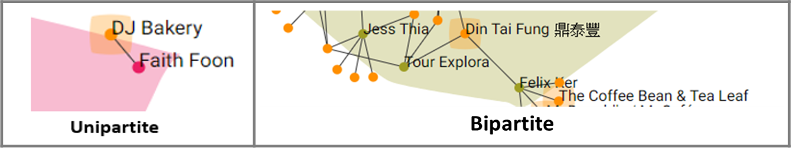

| This is a force-directed graph which aim to provide a sample size of the dataset used for this social analytics project. |
| Venue Name |
Users: Cluster 99 |
||
|
Users: Cluster 2 |
Users: Cluster 4 |
|
click on the venue's node (orange node) view the name of the venue name click on the clusters'node to expand the graph so as to view how the users (belonged to this cluster) are connected (visited/commented) to the venues. click on the area to group the cluster again. |
|  |